Overview
This is a class project of CS 184 Computer Graphics at UC Berkeley.
In this project, we implement additional materials for path tracer
Part 1: Reflection and Refraction
The pure refraction and reflection is a determinstic process where the incoming ray and reflected/refracted ray follows a fixed physical relation. For glass material, we combine the output of reflection and refraction using Schlick's reflection coefficient;
Visualization
We show images with different max_ray_depths
|
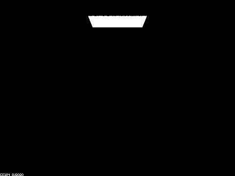
m=0
|
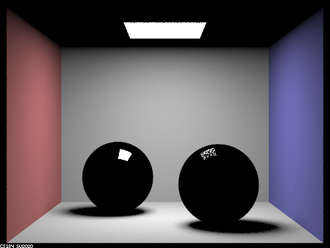
m=1
|
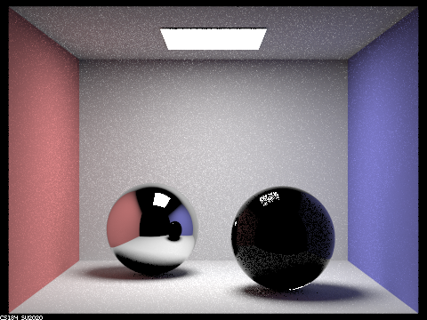
m=2
|
|
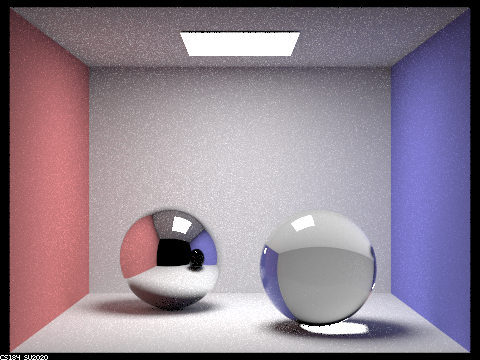
m=3
|
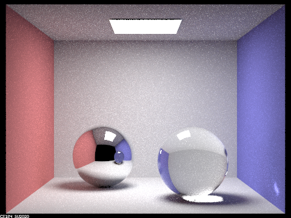
m=4
|
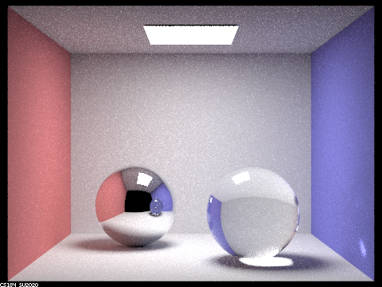
m=5
|
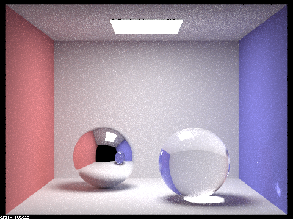
m=100
At m=0, we observe only emission. At m=1, we observe direct lighting and reflection of m=0. So the reflective surface only reflects light sources.
At m=2, we observe reflection of direct lightning and refraction of emission. This can be seen in the mirror reflection, where we see an image of m=1 on the sphere surface with dark ceiling.
At m=3, we obbserve the refraction of direct lighting and reflection of rays with additional bounces.
At m=4, we see the light spot on the wall caused by refraction.
In general, at m, we have m-1 in the reflection and m-2 in the refraction. This is caused by the fact that reflection takes 1 bounces and refraction takes 2 bounces (entering and exiting).
Part 2: Microfacet Material
We implement microfacet material based on the Fresnel term and Beckmann NDF as given in the literature. We use suggested distribution \(p_\theta, p_\phi\) for our importance sampling process.
Visualization
We visualize different values of \(\alpha \)
|
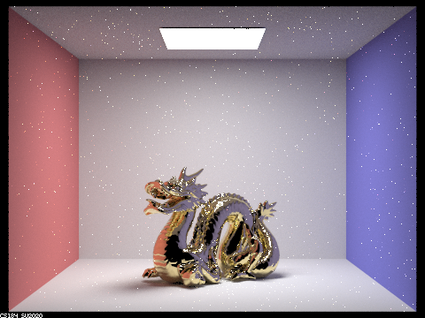
\(\alpha=0.005\)
|
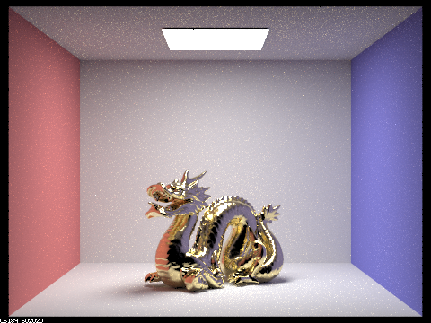
\(\alpha=0.05\)
|
|
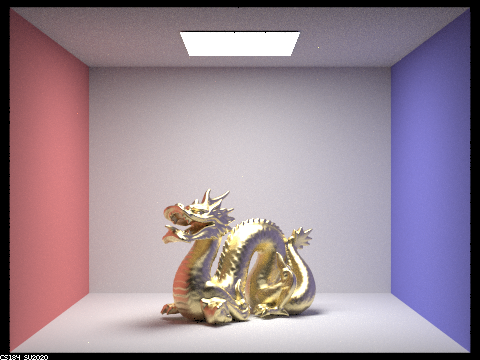
\(\alpha=0.25\)
|
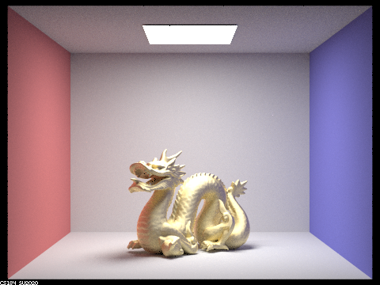
\(\alpha=0.5\)
|
We observe that as \(\alpha\) get smaller, the surface becomes more smooth and refelction is more clear. As \(\alpha\) gets larger, the surface is more rough and the reflection becomes blurry
We also visualize the difference of sampling methods
|
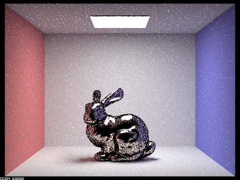
Cosine hemisphere sampling
|
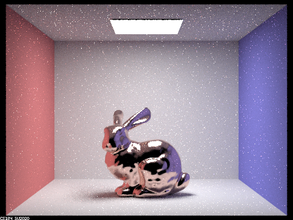
Importance Sampling
|
We observe that Importance Sampling leads to less noise and a higher quality output given the same sample rate
We show perform quantative analysis of rendering time.
We also show an image rendered using different parameters. We looked up for parameter of silver (Ag).
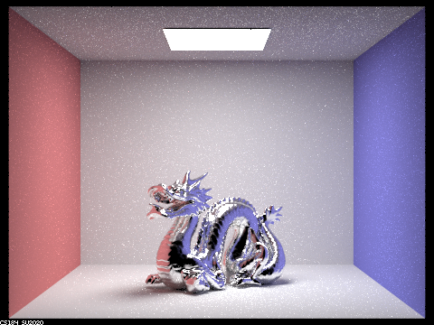
Website Link
https://jacklishufan.github.io/proj-webpage-template/proj3-1/index.html